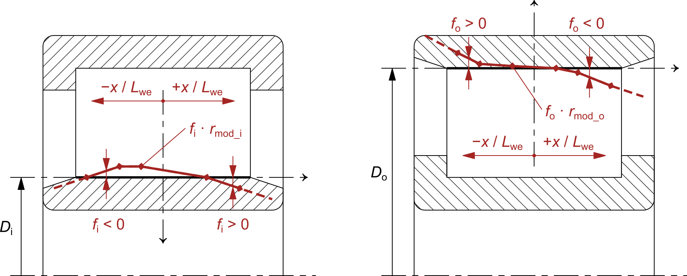

|
|
|


用户自定义滚道轮廓
滚子轴承通常具有平直的内、外滚道轮廓。但如有需要，可通过指定用户自定义的滚道轮廓修形来对其进行修改，类似于用户自定义的滚子修形。滚道轮廓修形定义为恒定修形值与沿有效滚子长度上特定相对位置处的修形比率的乘积。
内滚道和外滚道的恒定修形值 rmod_i 和 rmod_o 在 KISSsoft 用户界面中设置，并且应始终为正值。修形比率 f 在 DAT 文件中设置。文件应具有以下结构：
-- 这是一条注释
-- 索引 | 相对位置 | 修形比率
DATA
1 -0.50 1.00
2 -0.30 0.75
3 0.00 0.00
4 0.30 0.75
5 0.50 1.00
END
关于 DAT 文件的说明：
- 以“--”开头的行是注释，并被忽略。
- 包含沿有效滚子长度上特定相对位置处的轮廓修形比率的行以关键字 "DATA" 开头，以关键字 "END" 结尾。
- 每行必须包含三列。第一列是索引。它仅作为用户参考，其值不起作用并被忽略。第二列是沿有效滚子长度的无量纲相对位置 x/Lwe，单位为 mm/mm，用于定义修形比率 f。通常，第二列中的值范围从 -0.5 到 +0.5，但也可能超出此范围。第三列包含修形比率，它定义了在沿有效滚子长度的特定相对位置处由 f ∙ rmod 表示的修形量。
- 正的修形比率 f > 0 将导致指定位置处轴承游隙增大（或去除滚道材料），而负的修形比率 f < 0 将导致指定位置处轴承游隙减小（或增加滚道材料）。修形比率中至少应有一个值为 f ≤ 0，否则该修形将增大轴承游隙。
- 文件中应至少有 2 行数据。给定位置之间的修形量通过线性插值计算。给定位置之外的修形量通过线性外推计算。

图 28.2：用于定义内、外滚道轮廓修形的参数和坐标
User-defined raceway profiles
Roller bearings usually have straight inner and outer raceway profiles. However, if needed, these can be modified by specifying user-defined raceway profile modifications, similar to user-defined roller profiling. Raceway profile modification is defined as the multiplication of a constant modification value and a modification ratio for a specific relative position along the effective roller length.
Constant modification values are set for the inner and outer raceway, rmod_i and rmod_o, in the KISSsoft user interface and should always be positive. Modification ratios f are set in the DAT file. The file should have the following structure:
-- This is a comment
-- Index | Relative position | Modification ratio
DATA
1 -0.50 1.00
2 -0.30 0.75
3 0.00 0.00
4 0.30 0.75
5 0.50 1.00
END
Notes about the DAT file:
- Lines that start with "--" are comments and are ignored.
- The lines with profile modification ratios for a specific relative position along the effective roller length start with the keyword "DATA" and end with the keyword "END".
- Each line must have three columns. The first column is the index. It is only included as a reference for the user. Its values have no effect and are ignored. The second column is the non-dimensional relative position along the effective roller length x/Lwe, in mm/mm, for which the modification ratio f is defined. Usually, the values in the second column would extend from -0.5 to +0.5, but they can also exceed this range. The third column contains the modification ratio, which defines the amount of modification as f ∙ rmod, at a specific relative position along the effective roller length.
- A positive modification ratio f > 0 will result in increased bearing clearance at the specified position (or the removal of raceway material), while a negative modification ratio f < 0 will result in reduced bearing clearance at the specified position (or the addition of raceway material). At least one value in the modification ratio should be f ≤ 0, otherwise the modification will increase the bearing clearance.
- There should be at least 2 lines with the data in the file. The amount of modification between given positions is calculated by means of linear interpolation. The amount of modification outside given positions is calculated by means of linear extrapolation.
Figure 28.2: Parameters and coordinates used to define inner and outer raceway profile modifications